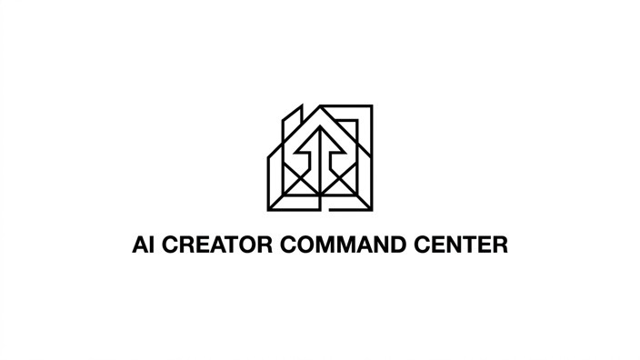
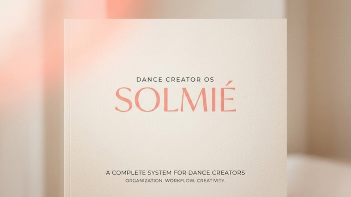
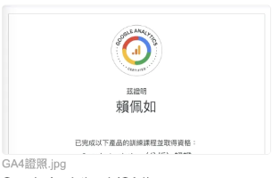
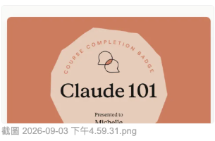
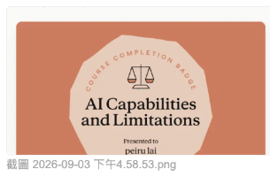

具備從「需求洞察、PRD 與 User Flow 規劃」到「AI 敏捷打樣與數據驗證」的全流程推進能力。結合 3+ 年爆款內容行銷實戰與 PMA 專案管理認證，打造兼具商業價值與直覺體驗的數位產品。
「很多人問我：從行銷爆款創作者、考取專案管理證照，再到動手刻出 AI 原型，這條跨度極大的路是怎麼走過來的？我的答案很簡單：因為我始終著迷於『人為什麼會停留、會渴望、會感到順暢』這件事。」
在創造單支近百萬觀看短影音的歷程中，我學到最深刻的一課不是演算法，而是「秒懂用戶情緒」。如果前 3 秒無法擊中痛點，再好的內容都會被滑走。做產品也是一樣——沒有被真實同理的痛點，再華麗的功能都是雜訊。
我的產品靈感來自真實生活。看見身邊舞者練舞倒帶暫停的手忙腳亂，我規劃了專用練習工具 Just Groove；看見行銷團隊在多平台數據迷航，我打造了 AI 行動建議儀表板。我習慣把自己丟進使用者情境裡，找出那個最卡、最繁瑣的細節。
我不是純資工本科，但我擁有 PMA 專案管理認證的架構思維與極強的落地執行力。我善用現代 AI 工具快速產出 User Flow、Wireframe 與可點擊的原型。PM 的價值不只是提出需求，而是用最快速度縮短「想法」到「使用者手中」的距離。
從真實使用者痛點出發，結合數據洞察與 AI 工具加速原型開發，將創意敏捷落地。


精準掌握 IG Reels 演算法與生活痛點 Hook，創造高完播、高自然擴散的社群爆款。
來自跨職能夥伴與真實用戶的反饋，驗證敏捷溝通、流量驅動與產品落地的實戰影響力。
「沛儒對社群爆點與人性情緒的嗅覺非常敏銳，不只把數據做起來（單支突破 96 萬觀看），更重要的是能精準掌握品牌調性與轉化動線。」
「身為 PM，他交付的 User Flow 與 Wireframe 邏輯清晰，且能使用 AI 工具迅速產出可互動 Prototype 對齊需求，大幅減少跨部門溝通的磨損。」
「Just Groove 的區間循環和鏡像播放直接解決了舞者常年自主練習的大痛點，介面設計非常直覺，完全擊中需求！」
持續精進 PM 專案管理、數據分析與 AI 原型應用，建立具備商業思維與技術視野的專業基石。
奠定標準化專案管理流程、範疇規劃、時程控管與風險評估實務能力。

精通使用者行為追蹤、事件設定、數據漏斗分析與數據驅動決策。
涵蓋全通路數位行銷、SEO 搜尋引擎優化與成效行銷核心策略。

掌握 LLM Prompting 技巧、程式碼生成輔助與 AI 原型敏捷開發。

評估 AI 技術適用情境與極限邊界，確保 AI 產品規劃的可可行性。
將生成式 AI 融入企劃工作流，加速素材生成與產品體驗設計。
結合使用者痛點發現、User Flow 設計、AI 原型速成與數據驗證的推進閉環。
深入使用者真實生活情境，精準辨識尚未被滿足的需求與痛點。
梳理直覺的使用者旅程，繪製清晰 Wireframe 減少溝通迷航。
善用 AI 工具與前端實作成型，快速打樣實體 App / Web Prototype。
結合內容流量與用戶行為數據，進行持續性產品迭代優化。